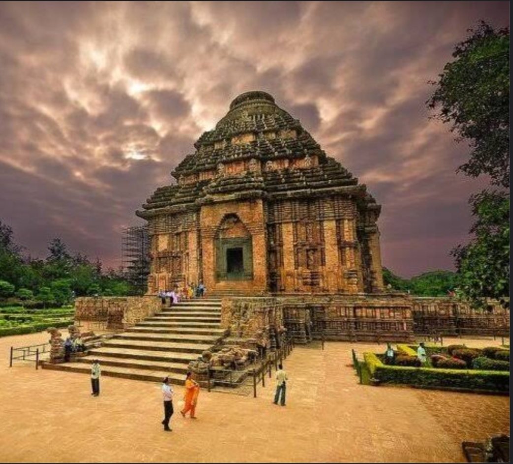
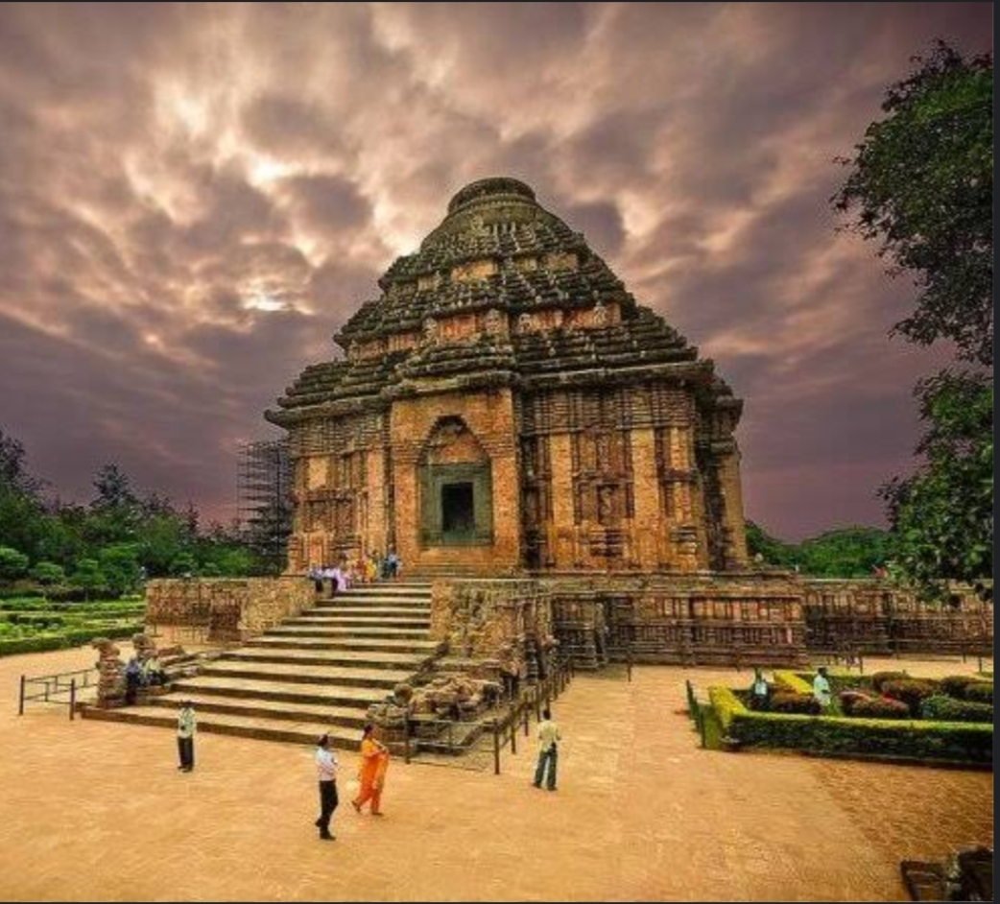

1. Brihadeeswarar Temple
Located in Thanjavur, Tamil Nadu
Is a masterpiece of Dravidian architecture built by Raja Raja Chola I in the 11th century. The temple features a towering vimana, detailed sculptures, and a massive Nandi statue.


2. Kandariya Mahadev Temple
Located in Khajuraho, Madhya Pradesh
Is a stunning example of Nagara-style architecture, built by the Chandela dynasty in the 11th century.

 

3. Konark Sun Temple
Located in Konark, Odisha
Built in the 13th century by King Narasimhadeva I, it is an architectural wonder designed as a massive stone chariot dedicated to the Sun God.